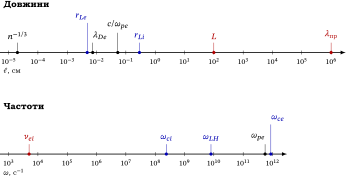

Елементи фізики плазми
12 Основні масштаби, режими та межі моделей
Після розгляду основних фізичних явищ корисно зібрати в одному місці методичну ідею, яка проходить через усю фізику плазми: модель визначається не назвою середовища, а співвідношенням характерних масштабів. Одна й та сама плазма може потребувати різного опису залежно від просторового масштабу, характерного часу та швидкості процесу.
Нехай \(L\) — просторовий масштаб задачі, а \(\tau \sim 1/\omega \) — характерний час її розвитку. Насамперед порівнюють
\(\seteqnumber{0}{12.}{0}\)\begin{equation*} \frac {\lambda _D}{L},\qquad \frac {r_L}{L},\qquad \frac {\omega }{\omega _p},\qquad \frac {\omega }{\omega _c},\qquad \frac {\nu }{\omega _c}. \end{equation*}
Ці відношення не є незалежним набором «характеристик плазми». Кожне з них відповідає на конкретне фізичне питання: чи можна вважати плазму квазінейтральною, чи замагнічені частинки, чи встигають електрони відновлювати квазінейтральність, чи встигають частинки здійснювати гірообертання та чи руйнують зіткнення замагніченість.
§ 12.1 Просторові та часові масштаби
Для токамака (\(n=10^{14}~\mathrm {см}^{-3}\), \(T=10\) кеВ, \(B=5\times 10^{4}\) Гс, \(L\approx 1\) м) ієрархію довжин і частот показано на рис. 12.1; далі кожна умова вибору моделі — це порівняння двох точок на цій шкалі.

Умова
\(\seteqnumber{0}{12.}{0}\)\begin{equation*} \lambda _D\ll L \end{equation*}
означає, що дебаївське екранування відбувається на значно меншому масштабі, ніж досліджувана задача. Тому на масштабі \(L\) можна, як правило, покладати \(n_e\simeq Zn_i\) і користуватися квазінейтральним описом. Якщо ж \(L\sim \lambda _D\), електростатичне поле та розділення зарядів стають частиною самої задачі.
Аналогічно,
\(\seteqnumber{0}{12.}{0}\)\begin{equation*} r_L\ll L \end{equation*}
є просторовою умовою: на одній ларморівській орбіті поле та його градієнти майже однорідні, тому орбіту можна замінити ведучим центром. Вона відрізняється від часової умови \(\omega \ll \omega _c\) (за час зміни плазми частинка багато разів обертається навколо силової лінії); обидві потрібні для дрейфового наближення (розд. 3). Якщо \(r_L\sim L\), гірація вже не є малим швидким масштабом, який можна відокремити від основного руху.
Порівняння характерної частоти процесу з плазмовою частотою має інший зміст. Умова \(\omega \ll \omega _p\) означає, що електрони швидко реагують на спробу порушити квазінейтральність, тоді як при \(\omega \gtrsim \omega _p\) їхня інерція стає суттєвою.
Умова \(\omega \ll \omega _c\) означає, що гірація є швидким рухом порівняно з еволюцією макроскопічного збурення. Саме тому у повільній МГД-динаміці окремий гірооберт можна не відстежувати.
Нарешті, відношення \(\nu /\omega _c\) характеризує конкуренцію зіткнень та магнітного обертання. При \(\nu \ll \omega _c\) частинка встигає здійснити багато гірообертів між зіткненнями і є сильно замагніченою; при \(\nu \gg \omega _c\) зіткнення руйнують гірообертання ще до завершення циклу.
§ 12.2 Зіткнювальний та беззіткнювальний режими
Для зіткнювального та беззіткнювального режимів одного порівняння частот недостатньо. Вводимо середню довжину вільного пробігу
\(\seteqnumber{0}{12.}{0}\)\begin{equation*} \lambda _{\mathrm {пр}}\sim \frac {v_{\mathrm {th}}}{\nu } \end{equation*}
та число Кнудсена
\(\seteqnumber{0}{12.}{0}\)\begin{equation} Kn=\frac {\lambda _{\mathrm {пр}}}{L}. \label {eq:plasma-knudsen} \end{equation}
Якщо \(Kn\ll 1\), частинка багато разів стикається на масштабі \(L\) і локальний гідродинамічний опис може бути виправданим. Якщо \(Kn\gtrsim 1\), структура функції розподілу за швидкостями стає істотною, і кінетичні ефекти вже не можна автоматично відкидати.
Ключова оцінка для токамака (\(n=10^{14}~\mathrm {см}^{-3}\), \(T=10\) кеВ): \(\nu _{ei}\approx 5\times 10^{3}~\mathrm {с}^{-1}\), \(v_{Te}\approx 4\times 10^{9}~\mathrm {см/с}\), тому \(\lambda _{\mathrm {пр}}=v_{Te}/\nu _{ei}\approx 10^6\) см \(\approx 10\) км, тоді як \(L\approx 1\) м. Отже, \(Kn\sim 10^4\): плазма «беззіткнювальна», проте МГД працює. Парадокс знімається так: поперек поля роль довжини вільного пробігу відіграє \(r_{Li}\ll L\) (магнітне поле «склеює» частинки поперек \(\vect B\)), а вздовж поля ні — тому саме поздовжній перенос потребує кінетики.
Водночас беззіткнювальність завжди треба розуміти відносно конкретного процесу. Умова
\(\seteqnumber{0}{12.}{1}\)\begin{equation*} \nu \ll \omega \end{equation*}
означає, що зіткнення слабкі саме для явища з характерною частотою \(\omega \). Повільний процес може бути зіткнювальним у тій самій плазмі, для якої швидкі коливання є беззіткнювальними.
Отже, твердження «плазма беззіткнювальна» без зазначення масштабу часу є неповним.
§ 12.3 Як за масштабами вибирають модель
Корисно розглядати наведені вище співвідношення не окремо, а як послідовність запитань.
| Умова |
Фізичний наслідок |
Типовий опис |
|
\(\lambda _D\ll L\) |
квазінейтральність, \(n_e\simeq Zn_i\) |
можна вводити єдину рідину (потрібне ще замикання) |
|
\(r_L\ll L\) |
замагніченість |
дрейфовий / МГД (разом з \(\omega \ll \omega _{ci}\)) |
|
\(Kn\ll 1\) |
багато зіткнень на масштабі \(L\) |
гідродинамічний |
|
\(Kn\gtrsim 1\) |
важлива структура \(f(\vect r,\vect v,t)\) |
кінетичний |
|
\(\nu \ll \omega \) |
зіткнення слабкі для даного процесу |
беззіткнювальний режим |
|
\(R_m\gg 1\) |
резистивна дифузія поля повільна |
ідеалізована МГД |
|
\(\beta \ll 1\) |
магнітний тиск домінує |
магнітно-керований режим |
|
\(\beta \gtrsim 1\) |
плазма істотно деформує поле |
МГД з повним балансом тиску плазми й поля |
Таблицю 12.1 не слід читати як набір взаємовиключних категорій. Реальна плазма може одночасно задовольняти кілька нерівностей. Саме їхня сукупність визначає, які члени рівнянь можна відкинути, а які залишити.
Це особливо важливо для МГД. Наприклад, \(R_m\gg 1\) саме по собі не означає повної ідеальної МГД: воно лише пригнічує резистивний член. Щоб отримати
\(\seteqnumber{0}{12.}{1}\)\begin{equation*} \vect E+\frac {1}{c}\vect v\times \vect B\simeq 0, \end{equation*}
треба також перевірити малість холлівського, електроннотискового та інерційного членів узагальненого закону Ома.
Таким чином, «МГД-опис» — це не властивість плазми взагалі, а наближення, справедливість якого треба обґрунтувати для конкретного процесу.
§ 12.4 Типова ієрархія масштабів у магнітному утриманні
Розглянемо типову установку магнітного утримання: \(n=10^{14}~\mathrm {см}^{-3}\), \(T=10\) кеВ, \(B=5\times 10^{4}\) Гс, дейтерієва плазма. Для неї характерна ієрархія
\(\seteqnumber{0}{12.}{1}\)\begin{equation*} \underbrace {n^{-1/3}}_{2\times 10^{-5}~\text {см}} \ll \underbrace {\lambda _{De}}_{7\times 10^{-3}~\text {см}} \sim \underbrace {r_{Le}}_{5\times 10^{-3}~\text {см}} \ll \underbrace {r_{Li}}_{0{,}3~\text {см}} \ll \underbrace {L}_{\sim 10^{2}~\text {см}}. \end{equation*}
Ця послідовність дає набагато більше фізичної інформації, ніж кожне число окремо. На найменшому масштабі видно дискретність частинок; далі виникають дебаївське екранування та електронна гірація; ще більшим є іонний ларморівський радіус; і лише на масштабі всієї установки з’являється макроскопічний рух плазми.
Частотна ієрархія для тієї самої оцінки має вигляд
\(\seteqnumber{0}{12.}{1}\)\begin{equation*} \begin{gathered} \omega _{pe}\approx 6\times 10^{11}~\mathrm {с}^{-1}, \qquad \omega _{ce}\approx 9\times 10^{11}~\mathrm {с}^{-1},\\ \omega _{ci}\approx 2\times 10^{8}~\mathrm {с}^{-1}, \qquad \nu _{ei}\approx 5\times 10^{3}~\mathrm {с}^{-1}. \end {gathered} \end{equation*}
Отже, зіткнення значно рідші за електронний та іонний циклотронний рух. Плазма сильно замагнічена і для багатьох швидких процесів практично беззіткнювальна.
Але з цієї ж ієрархії випливає важливе обмеження: «беззіткнювальна» не означає «завжди кінетична». На достатньо великих масштабах і повільних часах багато мікроскопічних ступенів свободи усереднюються, і виникає ефективний рідинний опис.
§ 12.5 Від кінетики до МГД
На масштабах, що значно перевищують іонний ларморівський радіус, і для повільних рухів, коли \(\omega \ll \omega _{ci}\), доцільний магнітогідродинамічний опис: плазма розглядається як провідне суцільне середовище (вивід — розд. 7.5 і 5).
Для швидких процесів і малих масштабів потрібен кінетичний опис: функція розподілу
\(\seteqnumber{0}{12.}{1}\)\begin{equation*} f_s=f_s(\vect r,\vect v,t) \end{equation*}
залежить від координат і швидкостей. Для беззіткнювальної плазми вона задовольняє рівняння Власова
\(\seteqnumber{0}{12.}{1}\)\begin{equation} \frac {\partial f_s}{\partial t} +\vect v\cdot \frac {\partial f_s}{\partial \vect r} +\frac {q_s}{m_s} \left ( \vect E+\frac {1}{c}\vect v\times \vect B \right ) \cdot \frac {\partial f_s}{\partial \vect v} =0. \label {eq:plasma-vlasov-summary} \end{equation}
Рівняння (12.2) доповнюється рівняннями Максвелла з джерелами
\(\seteqnumber{0}{12.}{2}\)\begin{equation*} \rho =\sum _s q_s\int f_s\,d^3v, \qquad \vect j=\sum _s q_s\int \vect v f_s\,d^3v. \end{equation*}
Саме з кінетичного опису природно випливають ефекти, які не містяться в найпростішій МГД: загасання Ландау, кінетичні плазмові хвилі, резонансна взаємодія хвиль із частинками та багато видів нестійкостей.
Водночас кінетичний опис не «кращий» за МГД у всіх ситуаціях. Він містить значно більше інформації, ніж потрібно для повільної макроскопічної динаміки. Завдання теорії — не використовувати найскладнішу модель, а відкинути лише ті ступені свободи, які справді є несуттєвими на вибраному масштабі.
§ 12.6 Безрозмірні параметри МГД
Для магнітогідродинаміки додатково важливі безрозмірні параметри
\(\seteqnumber{0}{12.}{2}\)\begin{equation} \beta =\frac {8\pi p}{B^2}, \qquad R_m\sim \frac {4\pi \sigma Lv}{c^2}, \qquad M_A=\frac {v}{v_A}, \qquad v_A=\frac {B}{\sqrt {4\pi \rho _m}}. \label {eq:plasma-mhd-parameters} \end{equation}
Параметр \(\beta \) порівнює плазмовий тиск із магнітним. При \(\beta \ll 1\) магнітне поле домінує над газодинамічним тиском, тоді як при \(\beta \gtrsim 1\) тиск плазми стає істотним у силовому балансі. Сама величина \(\beta \) не визначає застосовності МГД (вона працює і за малих \(\beta \)), а лише показує, наскільки плазма впливає на поле.
Магнітне число Рейнольдса \(R_m\) порівнює характерний час руху плазми з часом дифузії магнітного поля. Велике \(R_m\) означає, що резистивна дифузія поля повільна порівняно з рухом плазми.
Число Альвена \(M_A\) порівнює швидкість руху плазми з альвенівською швидкістю. Воно показує, наскільки важливі магнітні напруження для динаміки порівняно з інерцією потоку.
Ці параметри не задають одну-єдину «категорію плазми». Вони описують різні сторони одного й того самого режиму.
§ 12.7 Межі простих моделей
Наведені вище критерії дозволяють визначити режим, але не скасовують обмежень самих моделей.
У цьому курсі ми лише позначили, але не розвинули повністю дрейфово-кінетичну теорію, нелінійну теорію хвиль та сильну турбулентність. Повний опис хвиль у замагніченій плазмі потребує розв’язання тензорного дисперсійного рівняння, а детальний опис нестійкостей — лінеаризації кінетичних або МГД-рівнянь для конкретної рівноваги.
Особливо важливо, що реальний перенос у магнітно утримуваній плазмі може бути значно сильнішим за класичний колізійний перенос. Турбулентність породжує аномальний перенос, який може визначати реальний час утримання енергії. Тому навіть дуже мала частота зіткнень не гарантує ідеального утримання. Оцінка: для токамака бомівська дифузія \(D_B=cT/16eB\approx 1{,}3\times 10^{6}~\mathrm {см}^2/\mathrm {с}\) (\(\approx 10^{2}~\mathrm {м}^2/\mathrm {с}\)), тоді як класична \(D_\perp \sim \nu _{ei}r_{Le}^2\sim 0{,}1\) см\(^2\)/с: розрив у \(\sim 10^{7}\) разів. Турбулентні флуктуації \(\vect E\times \vect B\) перемішують плазму з кроком порядку розміру вихору, а не \(r_L\) (розд. 9).
Сильнозв’язана та квантова плазма потребує окремих методів. Отже, опис, побудований у цій книзі, треба розуміти як систему моделей із чітко визначеними межами застосовності, а не як універсальне рівняння для будь-якої плазми.
§ 12.8 Основні масштаби та формули
У таблиці зведено основні величини посібника. Наведені практичні формули відповідають системі СГС; \(T\) задано в еВ, \(n\) — у \(\mathrm {см}^{-3}\), \(B\) — у Гс, \(f\) — у МГц; \(A\) і \(Z\) — масове число та заряд іона.
Практичні формули в таблиці записано в СГС із числовими множниками для вказаних одиниць (\(T\) в еВ, \(n\) в см\(^{-3}\), \(B\) в Гс); вони не переносяться на СІ без перерахунку. Температуру всюди виражено в енергетичних одиницях (еВ).
|
Величина |
Формула |
Практична форма |
|
Дебаївська довжина |
\(\lambda _{De}=\sqrt {T_e/4\pi n_ee^2}\) |
\(7{,}43\times 10^{2}\sqrt {T_e/n_e}\) см |
|
Число частинок у сфері |
\(N_D=\frac {4\pi }3n_e\lambda _{De}^3\) |
\(N_D\approx 0{,}094\,\Gamma ^{-3/2}\) |
|
Параметр зв’язку |
\(\Gamma =e^2n^{1/3}/T\) |
|
|
Плазмова частота |
\(\omega _{pe}=\sqrt {4\pi n_ee^2/m_e}\) |
\(5{,}64\times 10^{4}\sqrt {n_e}~\mathrm {с}^{-1}\) |
|
Теплова швидкість |
\(v_{Te}=\sqrt {T_e/m_e}\) |
\(4{,}19\times 10^{7}\sqrt {T_e}\) см/с |
|
Циклотронна частота |
\(\omega _c=|q|B/mc\) |
\(\omega _{ce}=1{,}76\times 10^{7}B\), \(\omega _{ci}=9{,}58\times 10^{3}(Z/A)B\) |
|
Ларморівський радіус |
\(r_L=mcv_\perp /|q|B\) |
\(r_{Le}=2{,}38\sqrt {T_e}/B\) см, \(r_{Li}=1{,}02\times 10^{2}\sqrt {AT_i}/(ZB)\) см |
|
Частота зіткнень \(e\)–\(i\) |
формула (4.1) |
\(2{,}9\times 10^{-6}\,n\ln \Lambda \,T_e^{-3/2}~\mathrm {с}^{-1}\) |
|
Провідність (Спітцер), вздовж \(\vect B\) |
\(\sigma _\parallel \propto T_e^{3/2}/\ln \Lambda \) |
\(1{,}7\times 10^{14}\,T_e^{3/2}/\ln \Lambda ~\mathrm {с}^{-1}\) (поперек \(\sigma _\perp \approx \sigma _\parallel /2\)) |
|
Критична концентрація |
\(n_{\mathrm {кр}}=m_e\omega ^2/4\pi e^2\) |
\(1{,}24\times 10^{4}f^2~\mathrm {см}^{-3}\) |
|
Магнітний тиск |
\(B^2/8\pi \) |
\(3{,}98\times 10^{6}\,(B/10^4)^2\) дин/\(\mathrm {см}^2\) |
|
Параметр \(\beta \) |
\(\beta =8\pi p/B^2\) |
|
|
Альвенівська швидкість |
\(v_A=B/\sqrt {4\pi \rho _m}\) |
\(2{,}18\times 10^{11}B/\sqrt {n_i}\) см/с (водень) |
|
Час дифузії поля |
\(\tau _d=4\pi \sigma L^2/c^2\) |
|
|
Довжина Томаса — Фермі |
\(\lambda _{TF}=\sqrt {E_F/6\pi ne^2}\) |
\(0{,}5\sqrt {a_Bn^{-1/3}}\) |
|
Амбіполярна дифузія |
\(D_a\approx D_i(1+T_e/T_i)\) |
|
|
Швидкість іонного звуку |
\(c_s=\sqrt {(ZT_e+3T_i)/m_i}\) |
\(9{,}79\times 10^{5}\sqrt {ZT_e/A}\) см/с (\(T_i\ll T_e\)) |
|
Дрейф \(\vect E\times \vect B\) |
\(v_E=cE/B\) |
\(10^{8}\,E[\text {В/см}]/B[\text {Гс}]\) см/с |
|
Дифузія Бома |
\(D_B=cT_e/16eB\) |
\(6{,}25\times 10^{6}\,T_e/B~\mathrm {см}^2/\mathrm {с}\) |
|
Верхній / нижній гібридні частоти |
\(\omega _{UH}^2=\omega _{pe}^2+\omega _{ce}^2\); \(\omega _{LH}^2\simeq \omega _{ci}\omega _{ce}\) (лише при \(\omega _{pe}\gg \omega _{ce}\)) |
\(f_{UH}=\sqrt {f_{pe}^2+f_{ce}^2}\) |
|
Поле Драйсера |
\(E_D=4\pi e^3n\ln \Lambda /T_e\) |
\(2{,}6\times 10^{-13}\,n\ln \Lambda /T_e~\text {В/см}\) |
|
Критерій запалювання (D–T) |
\(n\tau _E\geq 12T/\langle \sigma v\rangle E_\alpha \) |
\(\gtrsim 1{,}5\times 10^{14}~\mathrm {см}^{-3}\mathrm {с}\) (мінімум, \(T\sim 25\) кеВ) |
|
Гальмівне випромінювання |
\(P_{br}\propto n_e\sqrt {T_e}\sum Z^2n_i\) |
\(1{,}7\times 10^{-32}n_e\sqrt {T_e}\sum Z^2n_i\) Вт/\(\mathrm {см}^3\) |
Таблиця 12.2 призначена не для заміни виведень, а для швидкої оцінки порядків величин. При виборі моделі спочатку визначають характерні масштаби задачі, а вже потім звертаються до відповідних формул.
§ 12.9 Що вимірюють на якому масштабі
Кожен параметр плазми «видно» лише методом, чий власний масштаб (довжина хвилі, ларморівський радіус, розмір котушки) сумірний із вимірюваною величиною. Таблиця 12.3 зводить методи, розібрані в попередніх розділах.
| Величина | Метод | Де розглянуто |
|
\(n_e\) (інтегральна, по хорді) |
інтерферометрія, \(\omega \gg \omega _p\) |
розд. 2.7 |
|
\(n_e\) (локальна, профіль) |
рефлектометрія, \(\omega =\omega _p\) |
розд. 2.7 |
|
\(T_e\), \(n_e\) (локально) |
томсонівське розсіяння, \(\alpha =1/k\lambda _D\) |
розд. 7.11 |
|
\(T_e\) (середня) |
опір за Спітцером |
розд. 4.5 |
|
\(T_e(r)\) |
ECE, \(\omega =\ell \omega _{ce}\) |
розд. 3.8 |
|
\(T_i\) |
допплерівське розширення ліній, нейтрони |
|
|
\(I\), енергія плазми |
пояс Роговського, діамагнітна петля |
розд. 5.12 |
|
положення, \(\Delta \), \(\beta _p+l_i/2\) |
магнітна реконструкція |
розд. 9.10 |
|
моди \(m,n\), \(\delta B\) |
котушки Мірнова, м’який рентген |
розд. 8.15 |
|
\(q(r)\), \(B\) |
обертання Фарадея |
розд. 6.7 |
|
\(P_f\), \(Q\) |
потік нейтронів |
розд. 10.10 |
Метод треба вибирати за тими самими критеріями, що й модель: наприклад, томсонівське розсіяння з \(\alpha \ll 1\) дає тепловий спектр, а з \(\alpha \gtrsim 1\) — колективні ефекти.
Головне в розділі
-
• Модель плазми визначається не назвою середовища, а співвідношенням характерних масштабів задачі.
-
• Порівнюють \(\lambda _D/L\), \(r_L/L\), число Кнудсена \(Kn\), частоти \(\nu /\omega \), магнітне число Рейнольдса \(R_m\) та \(\beta \).
-
• Зіткнювальний режим допускає гідродинамічний опис, беззіткнювальний — потребує кінетики.
-
• Простіші моделі мають межі застосовності; їх треба перевіряти оцінкою масштабів до розв’язання задачі.
-
• Параметри плазми вимірюють методами, чий масштаб відповідає вимірюваній величині (табл. 12.3).
Задачі
-
12.1. ★☆☆ Оцініть \(\lambda _{De}\), середню відстань \(a=n^{-1/3}\) та \(N_D\) для чотирьох об’єктів з табл. 1.1: іоносфера (\(n=10^5~\mathrm {см}^{-3}\), \(0{,}1\) еВ), сонячна корона (\(10^8~\mathrm {см}^{-3}\), \(100\) еВ), токамак (\(10^{14}~\mathrm {см}^{-3}\), \(10\) кеВ), ядро Сонця (\(10^{26}~\mathrm {см}^{-3}\), \(1\) кеВ). Для якого з них колективний опис найменш обґрунтований? [відповідь]
-
12.2. ★☆☆ Для дейтерієвої плазми \(n=10^{14}~\mathrm {см}^{-3}\), \(T=10\) кеВ у полі \(B=5\times 10^{4}\) Гс знайдіть \(n^{-1/3}\), \(\lambda _{De}\), \(r_{Le}\), \(r_{Li}\) і розташуйте їх за зростанням. Яка з обох довжин (\(r_{Le}\) чи \(\lambda _{De}\)) більша? [відповідь]
-
12.3. ★☆☆ Для \(n_e=10^{12}~\mathrm {см}^{-3}\), \(T_e=10\) еВ, \(\ln \Lambda =15\) знайдіть частоту зіткнень \(\nu _{ei}\), відношення \(\nu _{ei}/\omega _{pe}\) та довжину вільного пробігу \(\lambda _{\mathrm {пр}}=v_{Te}/\nu _{ei}\). Порівняйте \(\lambda _{\mathrm {пр}}\) з \(\lambda _{De}\). [відповідь]
-
12.4. ★☆☆ Користуючись табл. 12.2, оцініть \(\lambda _D\) та \(\omega _{pe}\) для плазми газового розряду з \(n_e=10^{10}~\mathrm {см}^{-3}\) і \(T_e=3\) еВ. Порівняйте отримані масштаби з типовим часом і просторовим масштабом макроскопічного процесу. [відповідь]
-
12.5. ★★☆ Оцініть час утримання \(\tau \sim a^2/D\) для токамака з \(a=1\) м і \(B=5\) Тл, \(T=10\) кеВ, якщо діє (а) класична дифузія \(D_\perp \sim 0{,}1~\mathrm {см}^2/\mathrm {с}\), (б) бомівська \(D_B=cT/(16eB)\). Який із двох результатів узгоджується з експериментом (\(\tau _E\sim 1\) с) і що це означає для вибору моделі? [відповідь]
-
12.6. ★★☆ За якої густини плазма з \(T=1\) кеВ перестає бути ідеальною (\(\Gamma \sim 1\)) і за якої стає виродженою (\(T\sim E_F\))? Порівняйте з ядром Сонця (задача 12.1). [відповідь]
-
12.7. ★★☆ Для плазми з \(n=10^{14}~\mathrm {см}^{-3}\), \(T_i=10\) кеВ та характерним розміром \(L=1\) м задано \(\lambda _{\mathrm {пр}}=10^6~\mathrm {см}\) і \(r_{Li}=0{,}3~\mathrm {см}\). Оцініть \(Kn=\lambda _{\mathrm {пр}}/L\) та \(r_{Li}/L\). Який із двох параметрів показує, що звичайна ізотропна МГД-модель має обмеження? Яке уточнення опису слід розглядати? [відповідь]
Контрольні питання
-
1. Що таке квазінейтральність? Якою нерівністю визначається можливість нехтувати розділенням зарядів на масштабі \(L\)?
-
2. Чому порівняння масштабів часто важливіше за числове значення окремої величини?
-
3. Що фізично означають умови \(\lambda _D\ll L\) та \(r_L\ll L\)?
-
4. Чому умова \(\nu \ll \omega \) повинна формулюватися відносно конкретного процесу?
-
5. Чим принципово відрізняються МГД- та кінетичний описи? За яких умов кінетичний опис стає необхідним?
-
6. Чому виконання \(R_m\gg 1\) саме по собі не гарантує повної ідеальної МГД?
-
7. Як пов’язані між собою число Кнудсена \(Kn\), довжина вільного пробігу та характерний розмір задачі?
-
8. Чому плазма може бути беззіткнювальною для швидких процесів і водночас суцільним середовищем на великих масштабах?
-
9. Які явища не описуються найпростішою ізотропною МГД-моделлю?
-
10. Яку інформацію дає типова ієрархія \(n^{-1/3}\ll \lambda _D\sim r_{Le}\ll r_{Li}\ll L\)?
-
11. Чому для МГД важлива саме \(\omega _{ci}\), а не \(\omega _{ce}\)?
-
12. Чому в токамаку перенос поперек поля аномальний і що це означає для моделі?